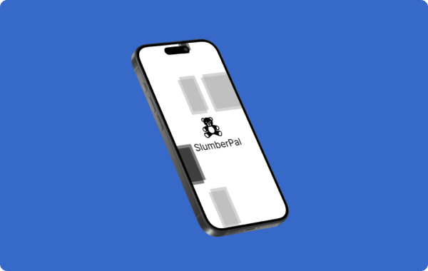
About the product
SlumberPal: Sleep tracking app with plush toy companion
For our HCDE 451 final project, we designed SlumberPal: a sleep tracking app paired with a plush toy companion that helps parents monitor their child’s sleep patterns.
The toy uses motion (and sound) sensing to detect when a child is asleep and to analyze sleep stages throughout the night. The app translates these signals into information parents can act on.
We also built in calming aromatherapy and white-noise experiences through the toy. While sleep tracking supports toddlers and older children with consistent patterns, the soothing interactions are designed to be usable across ages, including infants.
The project included four prototyping tracks—paper, digital, textile, and video—documenting goals, implementation choices, and evaluation outcomes for each iteration.
Our inspiration
Fostering healthy sleep habits for children's wellbeing
Inspired by the UN’s Sustainable Development Goal for Good Health and Wellbeing, this project focuses on helping families build healthier sleep routines—starting with the youngest members of our community. Restful sleep supports growth, cognitive development, and emotional wellbeing.
Paper Prototype
Concept
We started with a paper prototype of the app to test assumptions quickly and iterate before committing to higher-fidelity design.
We shaped the prototype using background research on sleep-tracking apps, focusing on patterns users valued—visual representations of sleep, mood journaling, and customizable tracking settings.
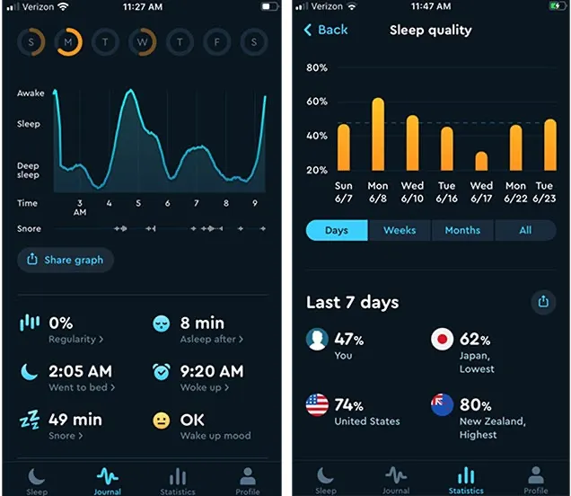
Goals
The paper prototype was designed to assess desirability and usability of the features we selected for the app.
We tested how well each feature supported the user experience—where participants struggled and what they expected from the overall flow.
These insights informed refinements for the next, slightly higher-fidelity digital prototype.
Implementation
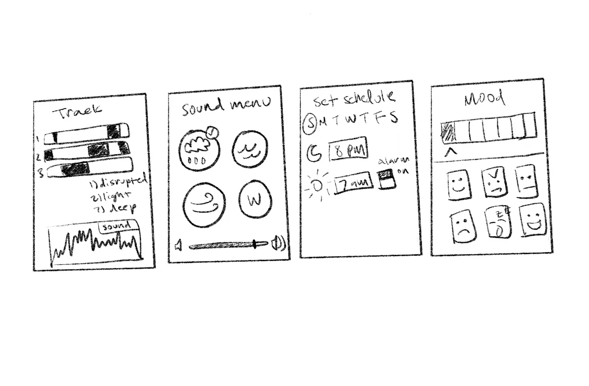
We focused on four screens tied to the app’s key user flows:
- Tracking/tracking history—to view previous tracking history along with important stats such as sleep score, sleep stages, wake up times, and time spent sleeping
- Sound control—to adjust the type and volume of sound emitted from the toy throughout the night
- Scheduling—to set the time for the toy to track the child's sleep or an alarm to wake up the child
- Mood journal—to keep track of noteworthy changes in the child's mood or behavior, potentially related to sleep quality
Digital sketches were translated into scaled paper artifacts to simulate real interaction during testing.
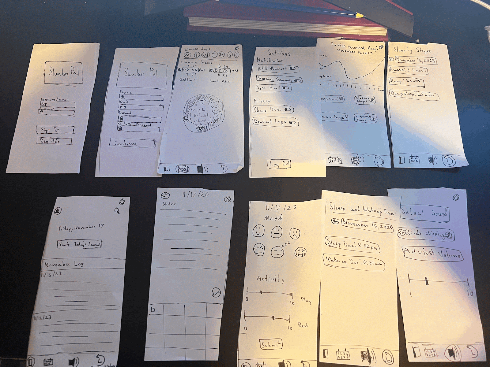
Evaluation
We evaluated desirability and usability through a usability session. Participants completed tasks for each feature while thinking aloud, and we followed up to understand where icons and components were unclear—then used that feedback to guide the next prototype.
Analysis
The session surfaced clear strengths:
- Broad spectrum of information—from sleep duration to quality
- Mood emoticons—visually entertaining, effective in conveying emotion without the need for words
Key opportunities for improvement:
- Confusing icons—nav bar icons are not standard to other apps, reducing user familiarity
- Continuous sleep graph—more intuitive for sleep stages to be graphed as discrete rather than continuous
- Manual text entry—overly complicates the journal feature
- Lack of home screen—unclear what the main feature of the app is
For a next paper iteration, we would prioritize navigation clarity—reducing over-focus on individual features—to strengthen the end-to-end user journey.
Digital Prototype
Concept
After the paper prototype, we translated the insights into a low-fidelity digital prototype, focusing on elements that participants found confusing.
The digital prototype included a clear home screen with last night’s sleep score and timeline, a sleep history view for trends in sleep quality, a mood journal, and a sleep schedule to set tracking time and ambient sounds.
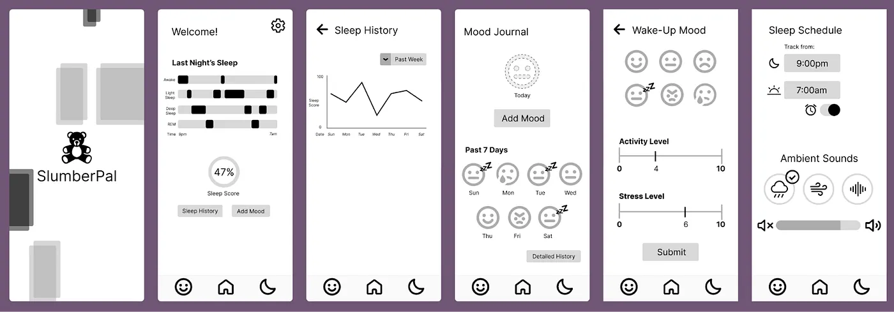
Goals
The digital prototype tested desirability of key features and interaction patterns, while enabling a stronger usability evaluation than the paper format.
We wanted to confirm that users found the designed features useful and easy to use, and that the overall flow felt simple and intuitive. The paper prototype gave us a baseline for what did and didn’t work, which guided this iteration.
We also needed a video-ready scenario. A low-fidelity digital prototype was sufficient to communicate the use case clearly—more polished than paper, but still within our time constraints.
Implementation
We created an interactive digital prototype in Figma, with key features like:
- Home — Displays a timeline visualizing the previous night's sleep, which is broken down into the various sleep stages so users can quickly scan the data for sleep and wake times. Also includes an overall sleep quality score.
- Sleep History — Accessed via nav bar. Consists of a line graph depicting sleep score history, with adjustable time range, for users interested in trends over longer periods of time.
- Mood Journal — Accessed via nav bar. A space for users to track the factors that influence, or are influenced, by sleep, such as activity, stress, and wake-up mood.
- Sleep Schedule — Accessed via nav bar. Where users can set a tracking schedule for the SlumberPal plushie and select the ambient sounds that it will play, such as rain or white noise.
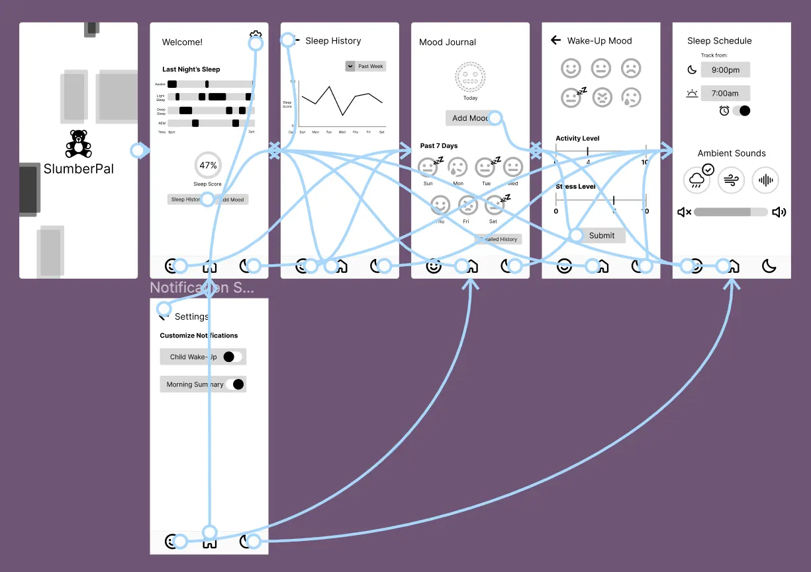
Evaluation
We evaluated desirability and usability with one participant. The user explored with minimal guidance after receiving context on the app’s purpose, then completed a short post-session interview focused on iconography and the overall navigation flow.
Analysis
The session surfaced several clear strengths:
- Clear iconography for the mood journal
- An intuitive sleep schedule screen
- A clear understanding of the overall purpose and uses of the app
Compared to the paper prototype, this version showed more design consistency, a clearer home screen, and improved icon comprehension. The participant still identified areas to improve, including:
- The moon icon for the sleep history page — thought the icon would take them to sleep history, not sleep schedule
- Redundancy between home screen and nav bar buttons
- More detail on the home screen — suggested that we add sleep history to the home screen to reduce the effort of navigating to a separate page
With this feedback, we would continue iterating on the home screen to surface the core information users need most often with less navigation effort, and refine iconography to improve usability.
Textile Prototype
Concept
Once we made sufficient progress with the app prototypes, we shifted gears to work on the plushie that the child would hold to sleep. We aimed to create two iterations for a toy bear with the most comforting, cuddle-friendly design.
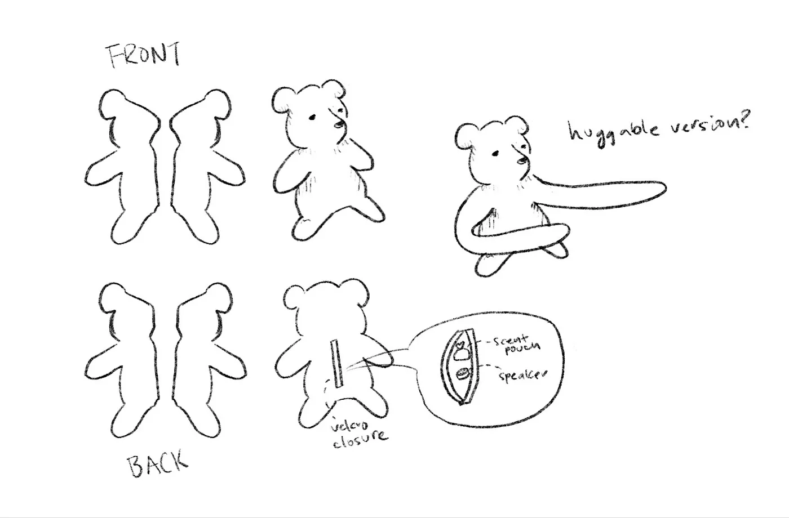
Goals
For both prototype iterations, the goal was to evaluate the desirability of the toy's physical form and materials, as well as the feasibility of incorporating additional components like scent and sound functionality.
We wanted the look and feel of the toy to appeal to children, regardless of age or gender, and help establish a positive, enjoyable association with their sleep environment.
Like the digital prototype, this prototype was also necessary for our video prototype to showcase its integration into the overall user experience. As such, we worked on refining not only the physical aspects of the toy but also its interactive elements.
Implementation
We first sketched out the pattern for each piece of the plushie. There were four pieces total, including two front pieces and two back pieces. We then cut the fabric and sewed everything together using a sewing machine.
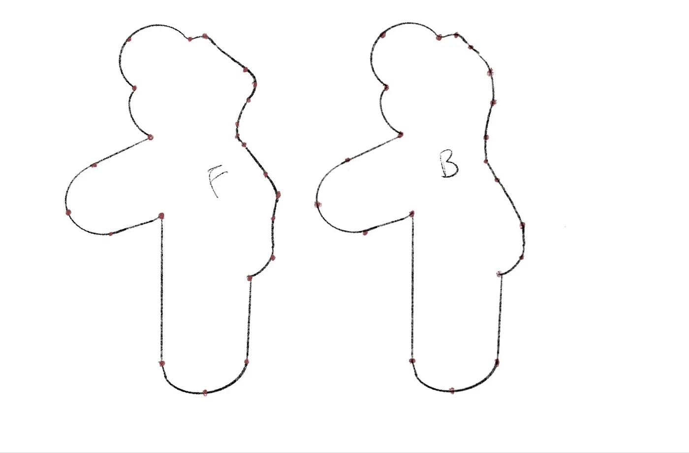
The first iteration was made out of pink felt with a safety pin closure at the back, while the second iteration was made with purple fleece and a velcro closure. The second iteration was scaled up in size by approximately 1.5 times.
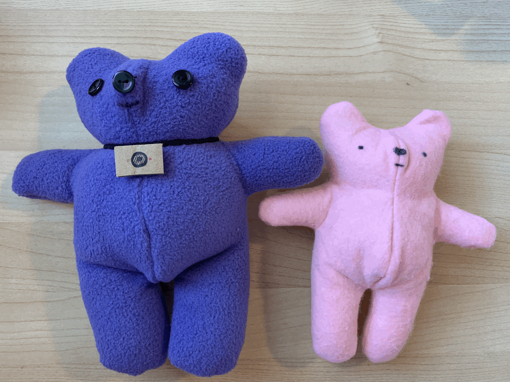
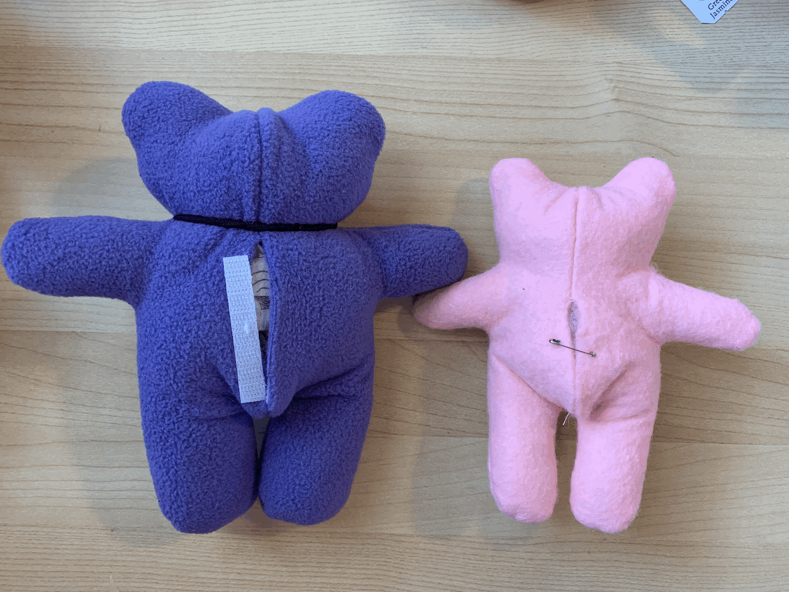
Both iterations included a small styrofoam cube, representing a speaker, and a scented tea bag. The first iteration used a rooibos tea bag, but the second iteration used a jasmine tea bag. A cardboard rectangle on the second iteration was also meant to represent a sleep sensor.
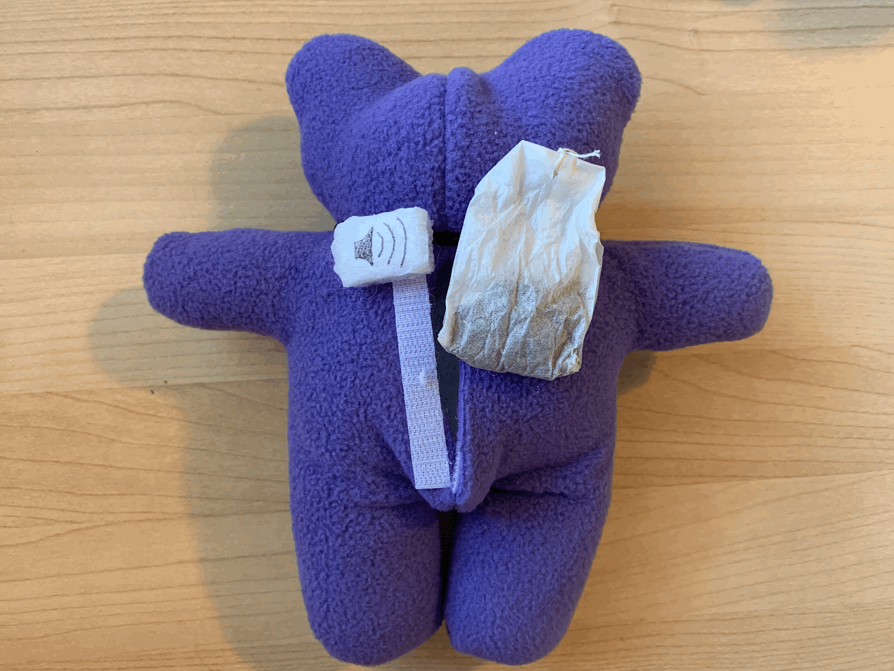
Evaluation
The evaluation of the prototype's desirability was focused on getting feedback on the aesthetics and tactile qualities of the toy. We gave a test user the toy to examine closely, and asked them for their impressions of its size, shape, and texture, along with whether or not they could see themselves comfortably holding it to sleep.
The feasibility assessment factored in the practical aspects of incorporating scent and sound features into the toy. We asked the test user to perform the action of adding the speaker and tea bag into the toy through the velcro opening in the back and then describe the ease of the task. We also had them sniff the toy and comment on the strength and calming properties of the scent.
Analysis
Here is general feedback we received on the first iteration of the prototype, which we used to improve the design of our second prototype:
- The size is too small for holding and carrying the internal components
- The felt makes the plushie feel firm and slightly rough to the touch
- The scent is a little astringent, which makes it less relaxing to smell
When we tested our second prototype, the feedback was much more positive. Specifically, what worked well was:
- Scaling up in size—made it easier to hold and much more plush
- Selecting a material more neutral in color and blanket-like in terms of feel
- Adding a velcro closure—compared to a safety pin, it felt more secure and user friendly
However, there were still several potential areas of improvement, including:
- Scent strength—expected the scent to waft out without having to inhale into it
- Lack of an internal (lined) pocket for the speaker and tea bag
- Method of attaching velcro—suggested the velcro be sewed on, instead of stuck on using adhesive
If there were to be a next iteration, we would work on making adjustments to the closures and internal elements of the plushie, since we didn't have time to address those aspects thoroughly in the second iteration, and they came up as problem areas in feedback sessions.
Video Prototype
Concept
To close out the project, we thought a video prototype could be used to present a key use case for the SlumberPal product and demonstrate the prototypes for the toy and app working together in tandem.
The scenario we chose was: A parent is concerned about their child's unusual sleeping habits and uses the app to check their sleep quality. When they see that their child is sleeping poorly, they add an aromatherapy pouch to the toy to aid their sleep. The next morning, the parent checks the app again to find that their sleep score has improved.
Goals
The goal for the video prototype was primarily to assess the desirability and impact of our project's concept and execution.
Specifically, we aimed to measure the emotional response of our audience to a scenario designed to be relatable and show off the functionality of our product in a real-world context. Through the video, we sought to answer the question: "Is our product really providing a practical solution to a common concern among our target users?"
Implementation
The first step in our process was to draft storyboards according to the scenario of our video. Once our storyboards were established, with each frame corresponding to a shot, we could begin filming and editing shots together.
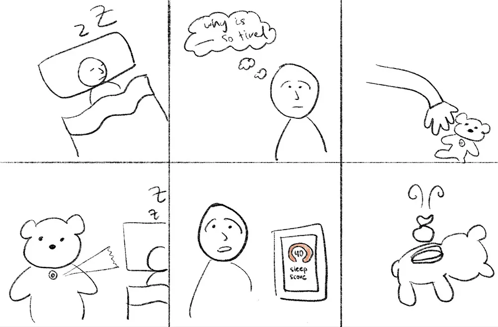
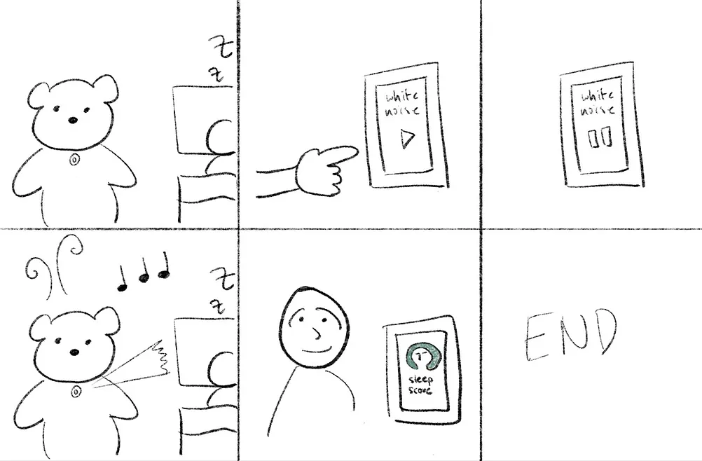
For filming, we made sure to have at least two people, one actor and one cameraman, so we could get the right distance and camera angles with limited equipment. Another person was in charge of editing in CapCut, where we added transitions and made trims wherever necessary.
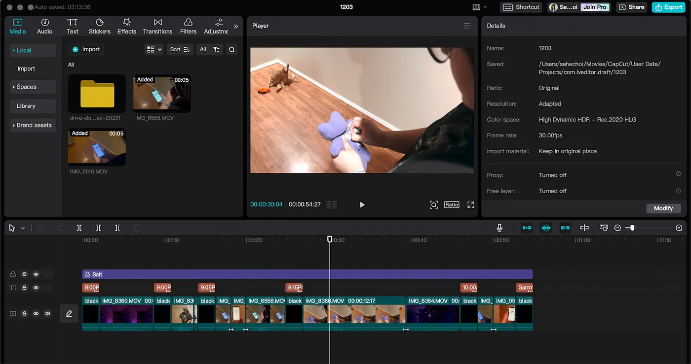
Evaluation
To evaluate this prototype with desirability and impact in mind, we played the video for a test user with minimal context, observing their facial expressions and noting any verbal commentary to capture their authentic reactions. We then prompted the user to describe, in their own words, what they perceived the product to be and what they felt watching the video.
In the second phase of our evaluation, we provided the user with a more detailed explanation of the product and asked them to rewatch the video. We asked them to pinpoint moments where our messaging was either clear or unclear to gather insights into their interpretation and understanding of the video's content.
Analysis
From our user testing, these are the aspects of our video that worked well:
- Text transition slides—helped with understanding the narrative
- Close-ups of app frames—highlighted the improvement in sleep score/quality
- Clear and straightforward sequence of events
These are the aspects that could use improvement:
- Color use in the app prototype—lack of color takes away from app's desirability
- Shot lighting—some shots are really dark, making it hard to see what's going on
- Depictions of toy functionality—almost seems like the toy is a sleep aid rather than a sleep tracker
If we could have done something differently in the process of creating this prototype, we would have recruited an actual child to act in the video to be able to expand on our scenario and add more shot variety.
Conclusion
Refining the product through iterative prototyping
Through the course of several iterations and test sessions, our team was able to make informed decisions about the design and prototyping of our product, and ultimately refined it to meet our core prototyping goals of desirability, feasibility, usability, and impact.